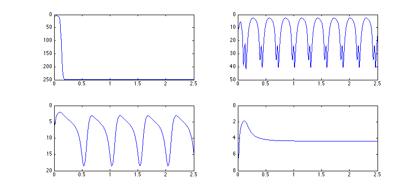

This archive contains MATLAB codes of both the original BGCT and
improved BGCT models described in the following two papers:
Paper 1
Title: Bidirectional Control of Absence Seizures by the Basal
Ganglia: A Computational Evidence (2014)
Authors: Mingming Chen, Daqing Guo*, Tiebin Wang, Wei Jing, Yang
Xia, Peng Xu, Cheng Luo, Pedro A. Valdes-Sosa, and Dezhong Yao*
Journal: PLoS Computational Biology
Emails: twqylsf@gmail.com and dqguo@uestc.edu.cn
Paper 2
Title: Critical Roles of the Direct GABAergic Pallido-cortical Pathway
in Controlling Absence Seizures (2015, in press, DOI:
10.1371/journal.pcbi.1004539) Authors: Mingming Chen, Daqing
Guo*, Min Li, Tao Ma, Shengdun Wu, Jingling Ma, Yan Cui, Yang
Xia, Peng Xu, and Dezhong Yao*
Journal: PLoS Computational Biology
Emails: twqylsf at gmail.com and dqguo at uestc.edu.cn
In addition, this archive also provides a comparable XPPAUT
implementation of the original BGCT model.
Please see the scripts in BGCT_matlab_paper1 file for the MATLAB codes
of the original BGCT model, and the BGCT_Basic.ode for the comparable
XPPAUT code. The detailed information of these codes is described as
follows:
1. The main mainFig2C.m script generates figures similar (not
identical due to starting in a random initial condition) to Fig 2C in
the paper 1. Zooming in on the origins of the subplots in the figure
mainFig2C.m generated should therefore look something like:

2. The scripts (main_bifurcation_Fig2A, main_bifurcation_Fig2B,
main_bifurcation_Fig3C, and main_bifurcation_Fig3D) generate all
bifurcation diagrams presented in paper 1. For each set of
experimental parameters, we run 30 trails using different random
initial conditions for checking the possible bistable dynamics.
3. The scripts (main_2D_analysis_Fig2DE, main_2D_analysis_Fig3AB,
main_2D_analysis_Fig4AB, main_2D_analysis_Fig5AB) generate
two-dimensional state and frequency diagrams similar to Figs 2D, 2E,
3A, 3B, 4A, 4B, 5A, and 5B in paper 1.
Please see the scripts in BGCT_matlab_paper2 file for the MATLAB codes
of the improved BGCT model by incorporating a new efferent pathway
representing direct connection from the GPe to the cerebral
cortex. The detailed information of these codes is described as
follows:
1. The BGCT_subfun_GPe_Basic script is the basic implementation of the
improved BGCT model.
2. The scripts (BGCT_subfun_GPe_Fig2_So,
BGCT_subfun_GPe_Fig4_Fig5_Sol, BGCT_subfun_GPe_Fig6_Fig7_Sol) generate
the data used to plot two-dimensional state and frequency diagrams
similar to Figs. 2, 4, 5, 6 and 7 in paper 2. For each set of
experimental parameters, we run 30 trails using different random
initial conditions for checking the possible bistable dynamics.
3. The BGCT_subfun_GPe_Fig3_Sol script generates all data used to plot
the bifurcation diagrams, frequency diagrams as well as the mean
firing rates for several critical neural populations in Fig 3 (paper
2).
Note that the other figures in these two papers could be easily
reproduced using the codes provided in this archive by suitably tuning
parameters.
MATLAB is commercial software available from http://www.mathworks.com
and XPPAut is free from http://www.math.pitt.edu/~bard/xpp/xpp.html
This archive was provided by Daqing Guo and Mingming Chen.